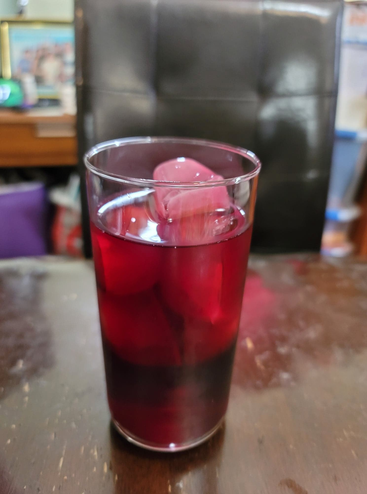

Hibiscus Iced Tea

Ingredients:
- 1 cup Dried hibiscus
- 1 cup Sugar
- 8 cups Water or 4 cups Water + 4 cups Ice
- Optional: 2 inches Ginger, sliced
- Optional: 1 tsp Allspice berries
- Optional: 4 cloves
- Optional: 1 Orange peel
- Optional: 1/2 stick Cinnamon
Instructions:
- Add the sugar, water, and other flavorings to a pot and heat over high. Stir to dissolve the sugar while the water comes to a boil. Then remove from the heat and add the hibiscus. Cover and let steep for 20 minutes.
- Strain the mixture into a pitcher and add the remaining water or ice and stir to combine. Serve cold over ice, optionally with some fresh lime.